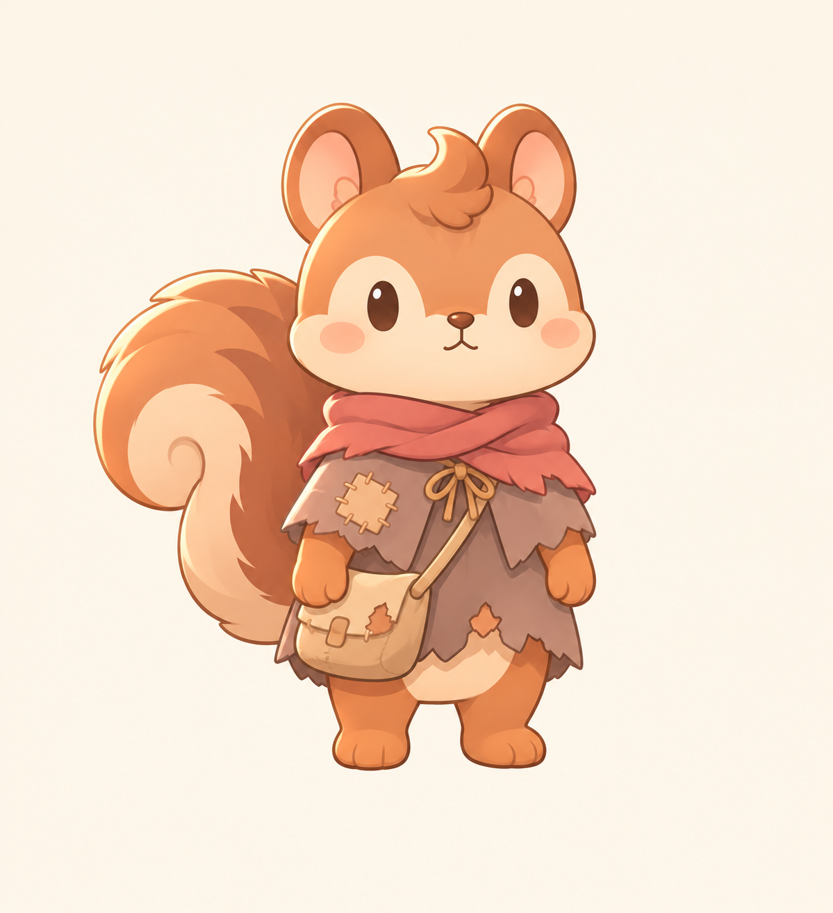
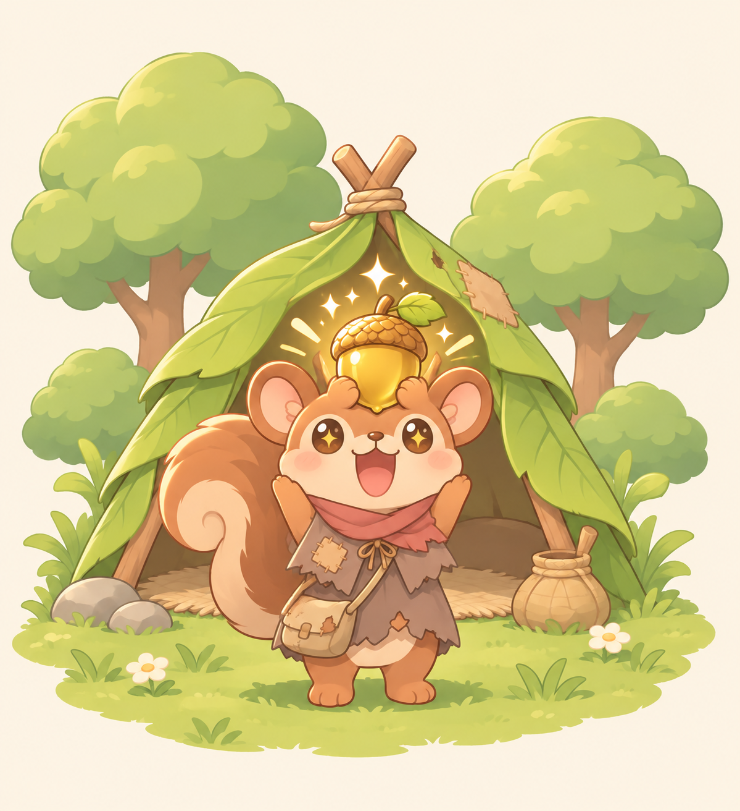
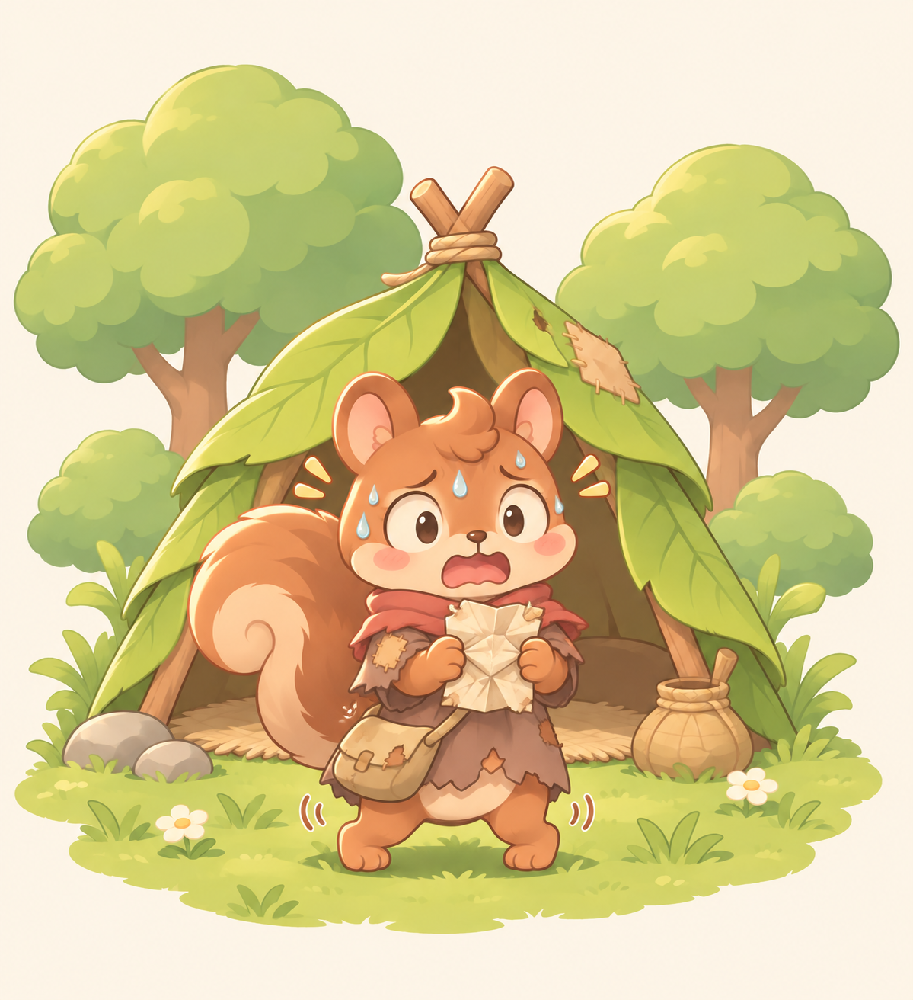
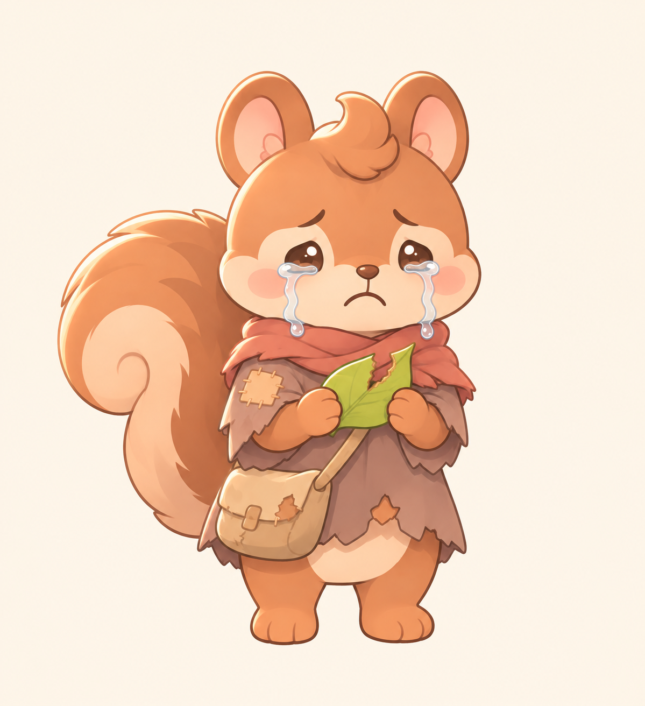
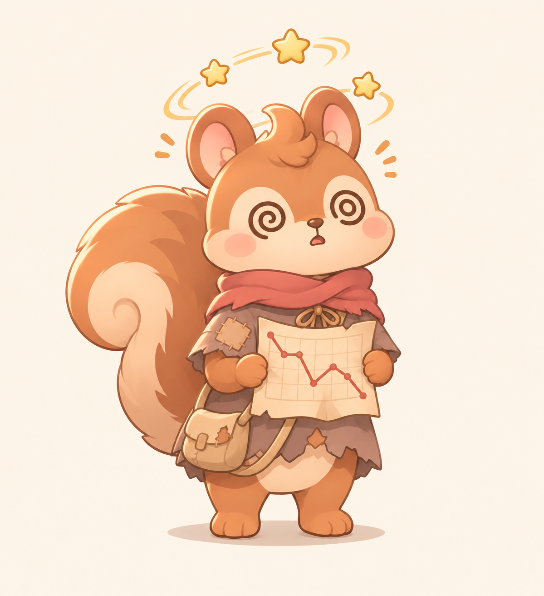

주인공 다람쥐 표정 5종 (v1)
스타일 D(파스텔 소프트 셀)로 뽑은 표정입니다. 기준 그림과 같은 캐릭터로 맞췄습니다.

기본 상태

황금 도토리를 든 수익 연출

패닉, 이자 독촉

파산 직전·파산

고배율 중독, 정신 이탈
확인할 점: 기준 그림과 크기·비율이 맞는지, 얼굴이 5종에서 같은 캐릭터로 읽히는지, 셀 그림자가 과하지 않은지.
맞으면 이 표정 5종을 기준으로 고정하고, 금융 NPC 4명과 배경 생성으로 넘어갑니다.